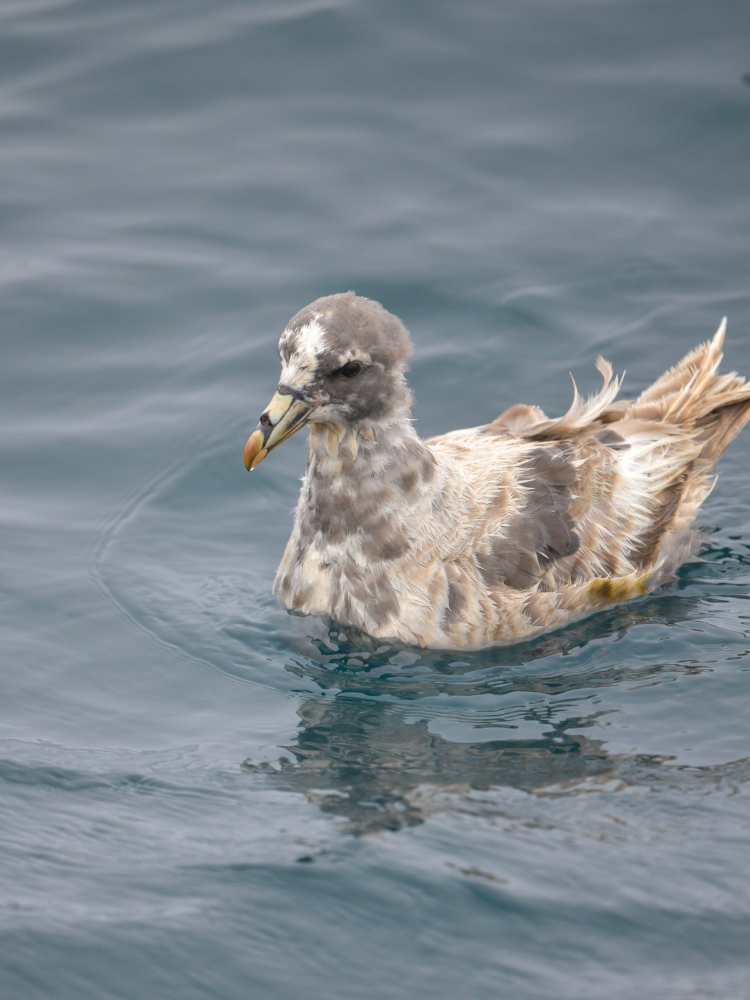
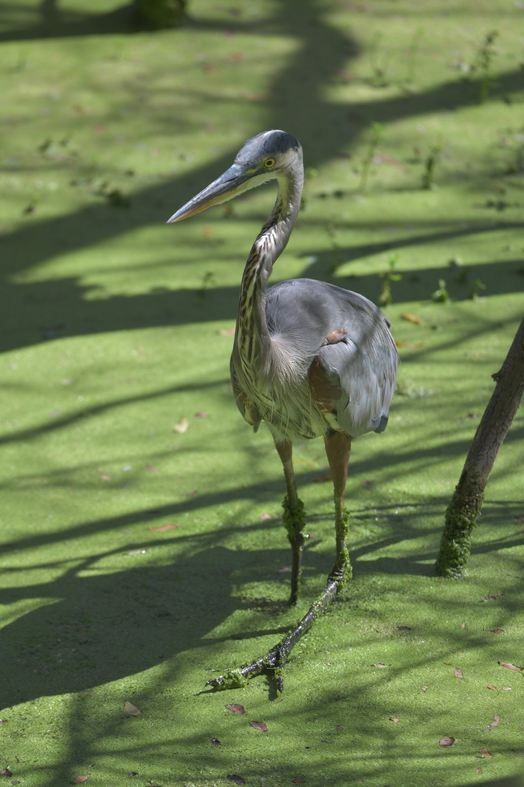
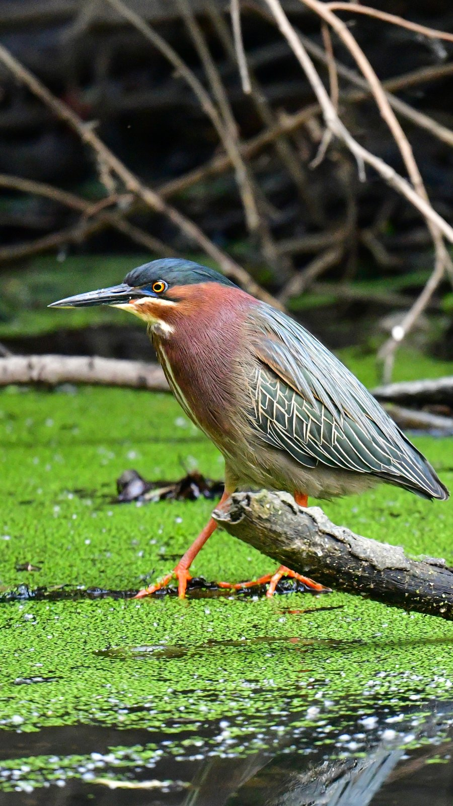
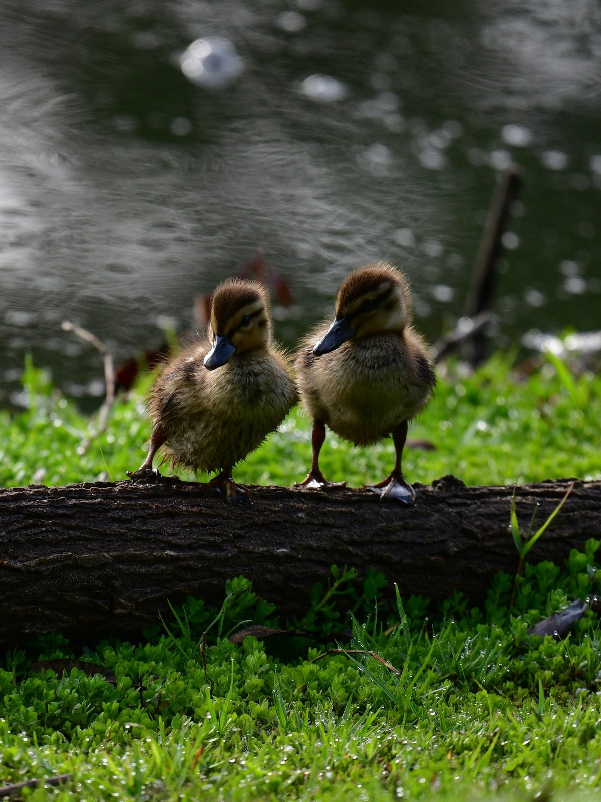
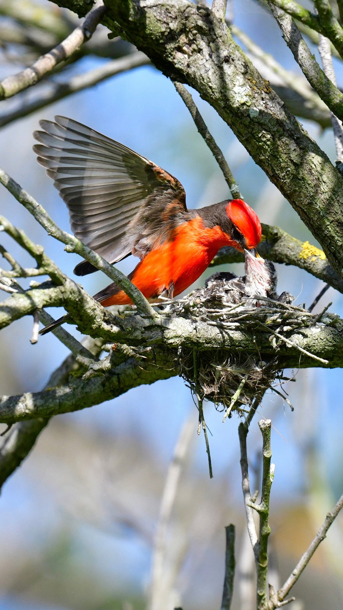
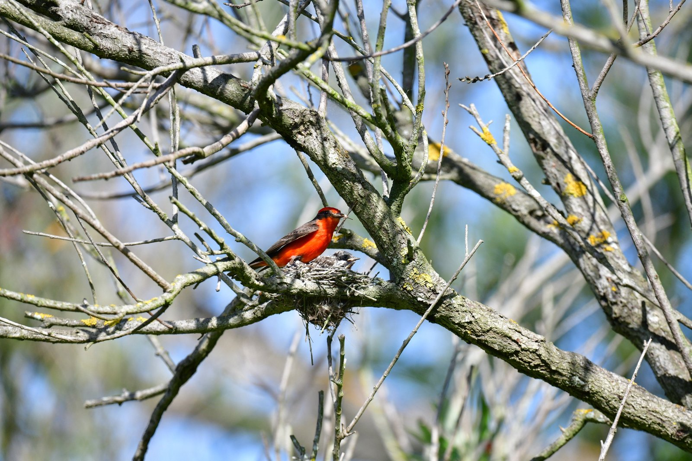
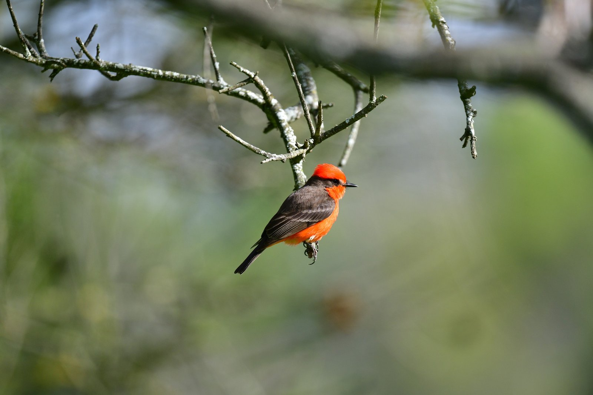
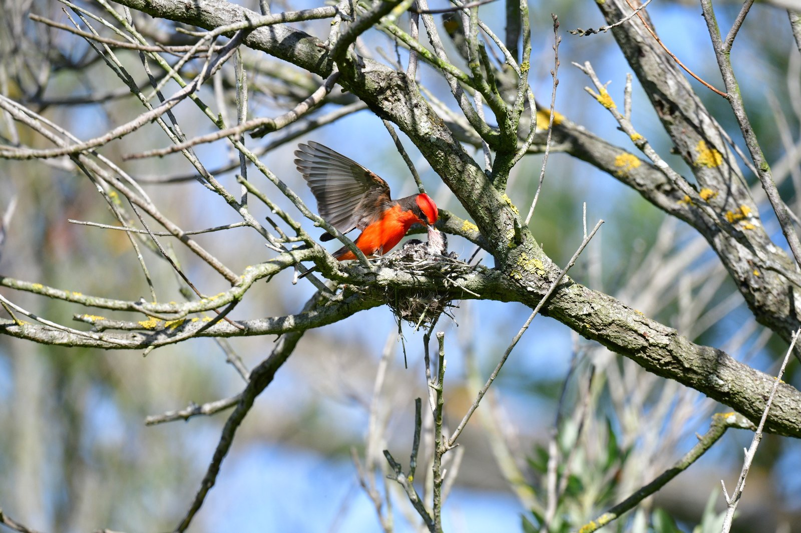
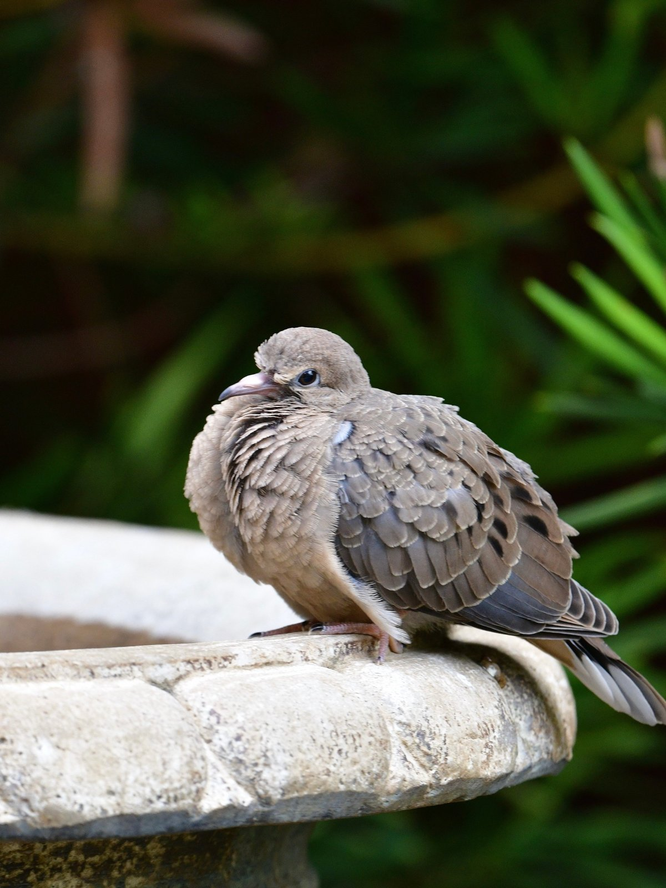

ALL PHOTO ESSAYS
PHOTO ESSAY
Along the California coast
From the parks of Huntington Beach to the waters around the Farallon Islands.

02 / Huntington Central Park East
Great Blue Heron
Photographed August 2026
Open photograph and details


05 / Huntington Central Park East
Vermilion Flycatcher
Photographed April 2026
Open photograph and details
06 / Huntington Central Park East
Vermilion Flycatcher
Photographed April 2026
Open photograph and details
07 / Huntington Central Park East
Vermilion Flycatcher
Photographed April 2026
Open photograph and details
08 / Huntington Central Park East
Vermilion Flycatcher
Photographed April 2026
Open photograph and details
